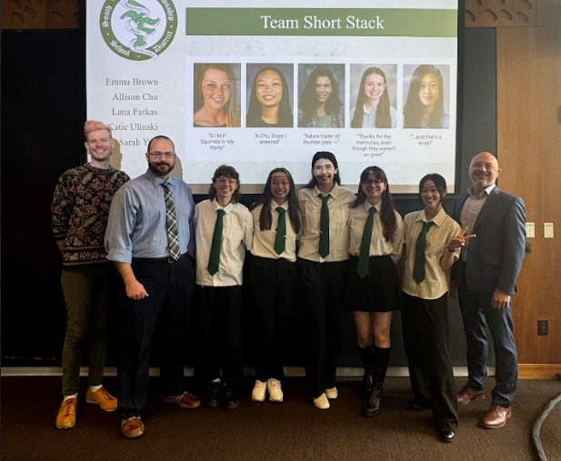

As part of my Masters program, we must complete a capstone project.
This allows us to have practical experiences working with clients
and stakeholders to create real solutions. My team is working with
South Fayette high school in Mcdonald, PA. The goal of this project
is to move away from the method of education where students get
trapped in one topic or subject area even before reaching college.
Our goal is to increase student autonomy and internal motivation to
help them find the best path forward for their future, whether that
be college or straight into the job force.

In order to achieve this, our group started by researching the problem space.
This included background research such as competitive analysis of other
school districts and doing research into the history of education in general.
We interviewed stakeholders to understand what was important to them and what
motivates them. Our stakeholders include students, parents, teachers, and
administrative staff. We also used participatory design methods to gain
insights about our client’s vision for the project. We shared our research
with our clients and are using their feedback to direct the next stage of development
for this project.

Currently, we are working on creating prototypes to test assumptions of what
could work. This includes a variety of methods such as interviews, Wizard of
Oz studies with AI recommendations, and cardboard prototypes. At this stage,
our prototypes are meant to be tested quickly and to gain insights for
specific questions and problems. The two prototypes shown here are a poster
meant to start conversations and cards meant to help students reframe their
failures or mistakes into learning opportunities. This project is currently
ongoing and we are looking forward to finishing this project.